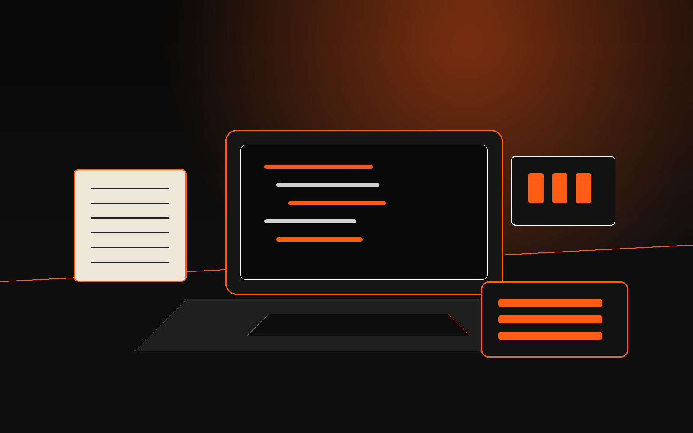

2026
Nexus Engine
Sistema de gestão empresarial que reúne vendas, estoque, financeiro e clientes, com histórico de operações, controle de acesso e assistência por IA.
Ver detalhes
Desenvolvedor Full Stack Júnior
Python, SQL e integração de aplicações.
Estudante de ADS em busca de uma oportunidade como desenvolvedor júnior.
01 / Perfil
Meus pontos mais fortes são Python e lógica de programação. Trabalho com integração de aplicativos, bancos SQL e ferramentas de automação. Tenho conhecimentos básicos de desenvolvimento web e experiência em produção, organização de equipes e melhoria contínua.
02 / Projetos
2026
Sistema de gestão empresarial que reúne vendas, estoque, financeiro e clientes, com histórico de operações, controle de acesso e assistência por IA.
Ver detalhes2026
Catálogo digital de roupas com painel de produtos, categorias, promoções e imagens. Sugestões de cadastro por IA e contato pelo WhatsApp.
Ver detalhes2026
Organização de projetos, sprints, tarefas e demandas, com perfis de acesso, histórico de alterações e acompanhamento de progresso.
Ver detalhesEm desenvolvimento
Organizador visual de ideias com mapas interativos, conexões entre conceitos, projetos e sugestões contextuais de IA.
Ver detalhesProjeto
Gestão de equipes de produção com registro de faltas, substituições e histórico de alocação de pessoas.
Ver detalhesProjeto
Aplicação para aprender e praticar planilhas, com exercícios, dicas, validação de respostas e acompanhamento do progresso.
Ver detalhesSites e demonstrações
Site institucional, qualificação de projetos e demonstrações para imóveis e moda, com interfaces responsivas e integrações.
Ver detalhes2026
Site pessoal estruturado para documentar projetos, estudos, competências e evolução profissional de forma cronológica.
Ver detalhes03 / Trajetória
IFSP - Instituto Federal de São Paulo. Base em organização, rotina administrativa e formação técnica.
Universidade Anhembi Morumbi - SJC. Graduação em andamento, com estudos em programação, desenvolvimento de sistemas e banco de dados.
Prática com Python, lógica de programação, SQL, integrações e ferramentas de automação. Cursos complementares de Java e QA e Office Avançado.
Vet&CIA. Atuação em operação, apoio à liderança, responsabilidades com equipe e acompanhamento de rotina produtiva.
MARS Brasil. Rotina produtiva, apoio à liderança, acompanhamento de dados em planilhas, 5S, Kaizen e melhoria contínua.
04 / Competências
Foco em Python e lógica de programação. Conhecimentos básicos de desenvolvimento web.
Ver detalhesBancos de dados SQL e integração de aplicações. PostgreSQL, Neon e Supabase nos projetos.
Ver detalhesTrabalho em equipe, boa comunicação, aprendizado rápido e atenção a detalhes.
Ver detalhesConexão entre aplicativos, bancos de dados, serviços e ferramentas de automação.
Ver detalhes